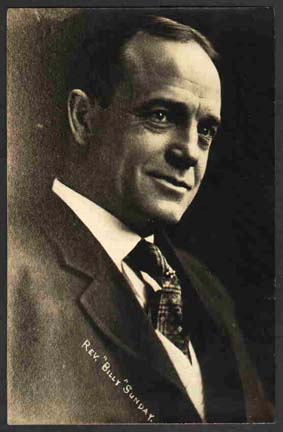
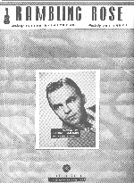
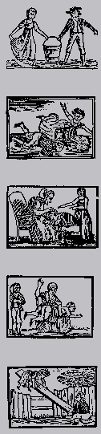
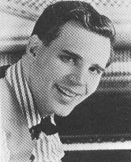
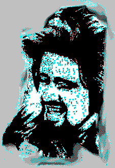

<html>
<head>
<Title> The Annotated "Ramble On Rose" </Title>
</head>
<body>
<i>"I know this song it ain't never gonna end"</i>

<H2> <a name="ramble">The <i>Annotated</i> "Ramble On Rose"</a></h2>
An installment in <a href="gdhome.html">The <i>Annotated</i> Grateful Dead Lyrics.</a>
<p> 
--<a href="david.html">David Dodd</a><br>
Research Associate, Music Dept.,
 University of California, Santa Cruz.
<hr>
<a href="copyrigh.html">Copyright notice</a>
<p>
An <a href="#analysis">analysis</a> of the lyric is available.
<hr>
<H3> <A HREF="#title"> "Ramble on Rose" </A> </H3>
Words by Robert Hunter; music by Jerry Garcia<br>
("Ramble On Rose" composed and written by Robert Hunter and Jerry Garcia. Reproduced by arrangement with Ice Nine Publishing Company, Inc. (ASCAP)).<br>
<blockquote>
Just like <A HREF="#jack">Jack the Ripper</A><br>
Just like <A HREF="#mojo">Mojo Hand</A><br>
Just like <A HREF="#sunday">Billy Sunday</A><br>
In a <a href="#shotgun">shotgun</a> <A HREF="#ragtime">ragtime band </A><br>
Just like <a href="http://nyweb.com/">New York City,</a><br>
Just like <A HREF="#jericho">Jericho</A><br>
Pace the halls and climb the walls<br> 
Get out when they blow
<p><i>(Chorus)</i><br>
Did you say your name was<br> 
<A HREF="#ramblin">Ramblin' Rose? </A><br>
Ramble on, baby<br>
Settle down easy<br>
  Ramble on, <a href="rose.html">Rose</a>
<p>
Just like <A HREF="#jandj">Jack and Jill</A><br> 
Mama told the sailor<br>
One heat up and one cool down<br>
Leave nothin' for the tailor<br>
Just like Jack and Jill<br>
My Papa told the jailer<br>
<A HREF="#buckle">One go up and one come down<br>
Do yourself a favor</A>
<p><i>(Chorus)</i>
<p>
<i>(Bridge)</i>
<p>
I'm gonna sing you a hundred verses in <a href="http://andy.rudoff.com/~ragtimers/">ragtime</a><br>
<a name="know">I know this song it ain't never gonna end</a><br>
I'm gonna march you up and down the local county line<br>
Take you to the <A HREF="#leader">leader of the band</A> <br>
<p>
Just like <A HREF="#otto">Crazy Otto</A><br> 
Just like <A HREF="#wolfman">Wolfman Jack</A><br>
Sittin' plush with a <A HREF="#poker">royal flush<br> 
Aces back to back</A><br>
Just like <A HREF="#shelley">Mary Shelley</A><br> 
Just like <A HREF="#frank">Frankenstein</A><br>
Clank your chains and count your change<br> 
Try to <A HREF="#walk">walk the line</A>
<p>
<i>(Repeat chorus and bridge)</i>
<p>
Goodbye, Mama and Papa<br> 
Goodbye, Jack and Jill<br>
The <A HREF="#grass">grass ain't greener,</A> the wine ain't sweeter<br> 
either side of the hill.
<p>
Did you say your name was <br>
Ramblin' Rose?<br>
Ramble on, baby <br>
Settle down easy<br> 
  Ramble on, Rose<br>
</blockquote>
<hr>
<H3> <a name="analysis">Analysis and Interpretation</a></H3>
<b>PROSODY</b>
<p>
The song lyric is structured in trochaic rhythm, with paired
verses consisting of two lines of triameter, one of quadrameter,
and another of triameter, for a total of 13 strong feet (!) per
verse. The verses' rhyming pattern is A, B, C, [C], B; with the
bracketed [C] being an optional internal rhyme: halls, walls;
chains/change; and plush/flush. There are seven verses, with the
first six in pairs. The final verse stands alone, carrying into
the final chorus.
<p>
The chorus' rhythm stays in trochees for the first line of five
beats, then switches to dactylic quadrameter for the second line,
and a punchy single dactylic line of two beats to wind up. The
chorus contains no rhymes. It is repeated three times.
<p>
The bridge is less easy to pin down, moving from iambic to
trochaic to dactylic rhythms. It similarly dispenses with any
firm rhyming pattern, relying solely on the assonances contained
in "ragtime" and "county line." The bridge is repeated twice.
<p>
<b>INTERPRETATION</b>
<p>
Perhaps the main point made by this song is that a lyric doesn't
need a firm interpretation in order to be evocative. Depending on
the listener, this song could be about American music itself, or
about a card game, or about a man saying so long to an immature
lover. At least three Jacks are invoked: Jack the Ripper, Jack
(of Jack and Jill), and Wolfman Jack, which could easily be
construed as constituting a poker hand. Tin Pan Alley, the Blues,
Ragtime, Spirituals, Folk, Nursery rhymes, Country & Western, and
Rock and Roll are all brought into the song, as noted in
subsequent links, below. And the narrator seems to be addressing
a lover who is determined to leave him on the subject of growing
up, of settling down, of not always trying to find greener grass
elsewhere.
<p>
How could one person be "just like" so many varied characters and
situations? Look at any one person's life, and you will find the
answer. There is no black and white answer to this song, just as
there is no black and white answer to the questions of life
itself. Hunter's hyperbolic use of the "just like" simile is a
way of granting us the freedom to find our metaphors where we
may, depending on the situation. 
<p>
<hr> 
<H3><a name="title"> "Ramble on Rose"</a> </H3>
Recorded on 
<ul>
<li><cite><a href="discog1.html#europe">Europe '72</a></cite>
        <ul>
        <li>This version included on <cite><a href="discog2.html#trip">What a Long, Strange Trip It's Been</a></cite>
        </ul>
<li><cite><a href="discog1.html#dick11">Dick's Picks, vol. 11</a></cite>
</ul>
<p>
It was introduced on Tuesday, October 19, 1971 at the Northrop
Auditorium at the University of Minnesota in Minneapolis. The
show is noteworthy for a number of reasons. First performances at the
show, besides "Ramble on Rose," included 
<a href="come.html">"Comes a Time,"</a> <a href="mex.html">"Mexicali Blues,"</a>
<a href="snit.html"> "Saturday Night"</a> (on
a Tuesday!), and <a href="tjed.html">"Tennessee Jed."</a> 
It was also Keith Godchaux's first show.
"Ramble On Rose" occupied the #2 spot in the second set,
following <a href="truckin.html"> "Truckin',"</a> and preceding "Me and Bobby McGee."</a>
Since then, it has remained in the repertoire, placing 38th in frequency of performance as of 1986. 
<p>
<A HREF="gopher://nemesis.berkeley.edu:70/00/miscellaneous/DeadBase_VIII"><cite>(
DeadBase)</cite></A>
<p>
Numbering the song among his favorites, Robert Hunter stated in
an
interview in <cite>Relix</cite> (vol 5, no. 2, p. 25) that
"Ramble on Rose is
a particular favorite--there's something funny about that song."
<p>
In Gans' <a href="biblio.html#gans"><cite>Conversations...</cite></a>,
Hunter says:
<blockquote>
"I think "Ramble On Rose" is the closest to complete whimsy I've come 
up with. I just sat down and wrote numerous verses that tied around
"Did you say..."" --p. 28
</blockquote>
<p>
Blair Jackson, in <a href="biblio.html#jackson"><cite>Grateful
Dead: the Music
Never Stopped</cite></a>, had this to say:
<blockquote>
"Most of Garcia's songs from this period feature unusual rhythms
that make them hard to peg in a specific musical genre. 'Ramble
on Rose,' written around a whimsical, completely undecipherable bit
of nonsense verse by Hunter, has a beat that sounds like a
slowed-down shuffle with every other beat taken out, and bits of old-time American
pop music thrown in." (<a href="biblio.html#jackson">Jackson</a> p. 135)
</blockquote>
<p>
An interview with Garcia in <a
href="biblio.html#stone"><cite><b>The Rolling
Stone Rock N Roll Reader</cite></b></a> offers this perspective
on Garcia's
approach to musical styles: 
<blockquote>"You have to get past the idea that music
<i>has</i> to be <i>one</i> thing. To be alive in America is to
hear all kinds of music constantly--radio, records, churches, cats on the
street, everywhere music, man. And with records, the whole history of music is open
to everyone who wants to hear it. ... Nobody has to fool around with musty
old scores, weird notation, and scholarship bullshit: you can just go into a
record store and pick a century, pick a country, pick <i>anything</i>, and dig
it, make it a part of you, add it to the stuff you carry around, and see that
it's all music." (pp. 259-260)
</blockquote>
<hr>
<H3> <a name="jack">Jack the Ripper</a> </H3>
Opening the song is Jack #1, a notorious, mysterious, frightening,
just plain <i>bad</i> individual whose identity remains unknown.
Between August 31 and November 9, 1888, five prostitutes in London were
murdered by an assailant who identified himself in anonymous letters to the
press as "Jack the Ripper." The killer used a knife to cut throats and
mutilate bodies. Over the years, many suggestions have been made to solve
the puzzle of the madman's identity. "Jack," of course, is the
colloquial equivalent of "John Doe." The most famous theory is that the
Ripper was Prince Albert--"Eddy"--of Wales, Duke of Clarence. For a thorough
exploration of this theory see Michael Harrison's <a
href="biblio.html#harrison"><cite>Clarence: Was He Jack the
Ripper?</cite></a>
(1972). The book concludes that a tutor of Eddy's, one J.K.
Stephen, a poet was the actual murderer. Part of the evidence
given by Harrison is an alleged similarity between poems sent to the press
by the Ripper and Stephen's own poetry.
<p>
Another theory, which enjoyed brief popularity, was that "Jack"
was actually "Jill" the Ripper--based on the assumption that a woman
would be less suspect, and could escape undetected while everyone searched
for a male killer.
<p>
For more information, or for entertainment, you can read from the
<a href="biblio.html">list of books</a> below:
     <ul>                                                                                  
    <li> 1. <a href="http://www.cm.cf.ac.uk/cgi-bin/Movies/person-exact?-fBloch,%20Robert">Robert
Bloch</a>. <cite>The Night of the Ripper</cite>. (1984) A horror
novel by 
the author of <a href="http://www.cm.cf.ac.uk/cgi-bin/Movies/title-exact?+Psycho">
<cite>Psycho</cite></a>.
    <li> 2. <a href="biblio.html#cullen">Tom Cullen.</a>
<cite>When London Walked in Terror</cite>. (1965)
    <li> 3. <a href="biblio.html#knight">Stephen Knight.</a>
<cite>Jack the Ripper</cite>. (1976)
    <li> 4. <a href="biblio.html#rumbelow">Donald Rumbelow.</a>
<cite>The Complete Jack the Ripper</cite>. (1975) 
    <li> 5. <a href="biblio.html#spierling">Frank Spiering.</a>
<cite>Prince Jack</cite>. (1978)
</ul>
<p>
<hr>
<H3><a name="mojo"> Mojo Hand </a></H3>
A note in <cite>Golden Road</cite>, Winter, 1984, stated that
"'Mojo Hand'... was a common term among rural blacks for a person with
extraordinary or seemingly magical abilities, and was the name of a song recorded
by Lightnin' Hopkins. This reference brings the blues into the song.
<p>
There is also a 1986 book by J.J. Phillips entitled <cite><b>Mojo
Hand</b></cite>, published by City Miner Books. 
<p>
<cite><b>The Oxford English Dictionary</cite></b> (2nd ed.) does
give a definition for "mojo": "local U.S. [Prob. of Afr. orig.:cf.
Gullah <i>moco</i> witchcraft, magic, Fula <i>moco'o</i> medicine man.] Magic, the
art of casting spells; a charm or amulet used in such spells." 
<p>
Further down in the definition, an example of usage speaks of a synonym for 
"mojo" being "lucky hand."
<p>
And yet another definition in the OED equates "mojo" with morphine.
<p>
According to <cite>Hoodoo--Conjuration--Witchcraft--Rootwork: Beliefs Accepted by Many 
Negroes and White Persons, These Being Orally Recorded Among Blacks and Whites by Harry
Middleton Hyatt</cite> (Hannibal, Mo.: Alma Egan Hyatt Foundation, 1970):
<blockquote>
"A <i>hand</i> is a magic helper, an object or act, which aids a person in obtaining a 
desire... <i>hand</i> has other names, among them--toby, guide, shield, roots, mojo, 
jomo (transposition of syllables in mojo), and hoodoo bag."
</blockquote>
<hr>
<H3> <a name="sunday">Billy Sunday</a> </H3>

Billy Sunday, listed in the <cite>Baseball Encyclopedia</cite> as William
Ashley (The Evangelist) Sunday, was one of the founders of the
American evangelistic movement--his heirs of today being Billy Graham, et
al. He started out as a baseball player for major league teams in
Chicago, Pittsburgh and Philadelphia, beginning his sports career in 1883,
quitting the game in 1890. He then began his religious career, starting
out as a desk clerk at the YMCA, working his way up as a helper to
itinerant preachers, and finally becoming the most popular evangelist of the time,
preaching to huge crowds.
<p>
Sunday's style was highly flamboyant, and included colloquial baseball lingo,
which won him a mass audience. One important aspect of his road show was the
music which accompanied it, which consisted of a huge choir, with piano and
trombone accompaniment. The music is said to have been "far from unctuous; 
it approached the jazzy."
<p>    
[<a href="biblio.html>Sources</a>]:
<ul>
<li>1. <cite>The World Book Encyclopedia.</cite>
<li>2. <cite>The Encyclopedia of Baseball.</cite>
<li>3. <a href="biblio.html#weisberger"><cite>They Gathered at the River.</cite></a>
</ul>
<hr>
<H3><a name="shotgun">Shotgun</a></H3>
"Shotgun: passing into <i>adj.</i> Made or done hastily or under pressure of
necessity."--<cite><b>Oxford English Dictionary</cite></b>, 2nd
ed.
<hr>
<H3> <a name="ragtime">Ragtime Band</a> </H3>
This note is for the phrase "ragtime band", which, in popular
music, conjures up the famous Irving Berlin song, <a
href="#berlin">"Alexander's Ragtime Band."</a> Evoking Irving
Berlin is a way of evoking all of the Tin Pan Alley tradition of
American popular music. The phrase "in a shotgun ragtime band"
matches the rhythm of the Irving Berlin title perfectly.
<p>
"Alexander's Ragtime Band" was published in March of 1911, and
was first popularized by Emma Carus.  According to James J. Fuld,
in his <a href="biblio.html#fuld"><cite>The Book of World-Famous
Music</cite></a>, "The `Alexander' in
the title is reportedly Jack [!] Alexander, a cornet-playing <a href="#leader">bandleader</a> who died in 1958. It has been
frequently pointed out that the song is not in real ragtime.
Berlin was born in Temun, Russia, in 1888." (p. 79)  
<p>
Alec Wilder, in his book <a
href="biblio.html#wilder"><cite>American Popular Song: the Great Innovators, 1900-1950</cite></a>, devotes 30
pages to the role of Irving Berlin, and comments as follows on the subject of
"Alexander's Ragtime Band": "I have heard enough ragtime to wonder why
<i>Alexander's Ragtime Band</i> was so titled. For I find no
elements of ragtime in it, unless the word `ragtime' simply
specified the most swinging and exciting of the new American
music. It is a very strong, solid song, verse and chorus. More
than that, it is not crowded with notes. There are constant open
spots in it. At the outset, in the verse, the first three
measures begin on the second beat. This `kicks' the song, and
immediately. Incidentally, this is the earliest popular song I
know of in which the verse and chorus are in different
keys....Could the slight, chromatic opening phrase of the song
have cuased all the furor, the grass fire that spread over the
face of Europe? Or was the restatement of this phrase a fourth
higher the device which did the trick? In any event, the song was
a high point in the evolution of popular music." (pp. 94-95)
<p>
Hunter, in alluding to Berlin's song, manages to evoke two strains of
American popular music simultaneously, <a href="http://www.acns.nwu.edu/cgi-bin/imagemap/jzstyle?155,57">ragtime</a> and Tin Pan Alley.
This becomes significant as the song progresses, evoking more and
more tributaries to the mainstream of American music.
<p>
[<a href="biblio.html">Sources.</a>]
<hr>
<H3><a name="berlin">Alexander's Ragtime Band</a></H3>
Words and music by Irving Berlin (1911)
<p>
<pre>
Oh! ma honey, Oh! ma honey, 
Better hurry, and let's meander;
Ain't you goin', ain't you goin'
To the <a href="#leader">leader man,</a> ragged meter man?
Oh! ma honey, Oh! ma honey,
Let me take to to Alexander's grandstand, brass band,
Ain't you comin' along?
<p>
[Chorus]
<p>
Come on and hear, come on and hear
Alexander's Ragtime Band;
Come on and hear, come on and hear,
It's the best band in the land.
They can play a bugle call
Like you never heard before,
So natural that you want to go to war;
That's just the bestest band what ma, honey lamb!
Let me take you by the hand
Up to the man, up to the man
Who's the leader of the band;
And if you care to hear the Swanee River played in ragtime,
Come on and hear, come on and hear
Alexander's Ragtime Band.
<p>
Oh! ma honey, Oh! ma honey,
There's a fiddle with notes that screeches
Like a chicken, like a chicken,
And the clarinet is a colored pet.
Come and listen, come and listen
To a classical band what's peaches, come now, somehow,
Better hurry along!
<p></pre>
<hr>
<H3><a name="jericho"> Jericho</a> </H3>
This is a fairly obvious reference, but two things deserve note.
<p>
<ul>
    <li> 1. The Biblical account of the fall of Jericho is found in the
Book of Joshua, Chapter 6, vv. 1-20.
<p>     
    <li> 2. The reference to Jericho also calls to mind the spiritual
<a href="http://pubweb.parc.xerox.com/digitrad/song=BATJERCO">
"Joshua Fit de Battle of Jericho."</a> Since so much of this song
evokes various aspects of American popular music, this evocation gains
significance.
<p>
In <a href="biblio.html#jones"><cite>Wade in the Water,</cite></a>, Arthur Jones
entitles one entire chapter "Joshua Fit the Battle of Jericho: Struggle and
Resistance." 
<blockquote>
"A song like "Joshua Fit the Battle of Jericho," for example, could honor the
actions of any number of "Joshuas" in the African community who led their people in battle in many
different "Jerichos." It could also be used as bibliocal support for planned
batles. For example, in his meetings with co-conspirators in Charleston,
South Carolina, Denmark Vesey preached from the Bible, using verse from the
book of Joshua to draw parallels between the biblical story of Joshua and the
plans for the insurrection in Charleston." -- p. 52.
</blockquote>
</ul>
This comment from a reader:<br>
<blockquote>
"From Hartman@UH.EDU<br>
Date: Wed, 01 Mar 1995 10:42:18 -0600 (CST)<br>
From: Gary Hartman <Hartman@UH.EDU><br>
To: ddodd@serf.uccs.edu<br>
Subject: Annotated GD Lyrics<br>
<p>
 I have one minor comment on Ramble on Rose.  I think the
end of the Jericho verse -- "get out when they blow" -- resonates with the
musical allusions you have so correctly identified.  "To blow" is,
especially in the jazz argot, to play music.  And, of course (this may be so
obvious that you intentionally don't mention it), the walls of Jericho were
brought down by the power of music.  It even seems that earlier in the
verse, "pace the halls" could refer to the rooms in which the musicians play
(and the backstage areas in which they anxiously await the time to blow).
<p>
               Peace,<br>
                Gary"
</blockquote>
<hr>
<H3><a name="ramblin">Ramblin' Rose</a></H3>
Hunter might well have written "You never said your name was Ramblin' Rose,"
but chose not to, leaving the <a href="ambig.html">ambiguity</a>
of the song firmly in place.
<p>
A rambling rose is an old-fashioned and now rarely cultivated type of rose 
which would spread low across the ground on long, whippy canes. Ramblers are
now grown usually as climbers, instead.
<p>
Three songs in American popular music have borne the name "Ramblin(g) Rose."
The most famous of the three is the 1962 "Ramblin' Rose," words and music 
by Joe and Noel Sherman. It was introduced by Nat King Cole, who at first
did not wish to record it. He was talked into it, however, by his 12-year-old
daughter, (Natalie?) and her instincts were good, because it was a hit,
reaching the #2 position on the charts in August, 1962. It has since been
recorded by Chuck Berry, Jerry Lee Lewis, and 
<a href="http://www.msu.edu/mfest94/willie.html">Willie Nelson,</a> among
others.
<p>
The second most popular tune
of this title is the 1948 "Rambling Rose" by Joseph McCarthy (not the
infamous Joe McCarthy) and Joe Burke.
<p>
The third is of unknown date, titled "Ramblin Rose" by Wilkin and Burch,
recorded by Slim Whitman.
<p>
A fourth song, dating from 1931, is entitled "Marta (Rambling Rose of the
Wildwood)" by Gilbert and Simons.
<p>
And a reader points out that "Rambling Rose" was also the title of a 
<a href="http://www.cm.cf.ac.uk/cgi-bin/Movies/title-exact?+Rambling%20Rose%20(1991)">movie</a>, 
starring <a href="http://www.cm.cf.ac.uk/Movies/Pictures/LauraDern.jpg">Laura Dern</a>.
<hr>
<a name="jandj"><H3> <A HREF="#opie">Jack and Jill</A> </H3> </a>
A well-known, perhaps the <i>best</i> known <A
HREF="goose.html">nursery
rhyme</A> is ingrained in our memories from early childhood.
<p>
Jack #2 of the song is thus introduced, along with his feminine counterpart.
References to this pair predate even the nursery rhyme, according to the 
<a href="biblio.html#opie"><cite>Oxford Dictionary of Nursery Rhymes,</cite></a>
which dates the rhyme from the first half of the 17th century. <a href="http://www.shakespeare.com">
Shakespeare</a> says "Jack shall have Jill, Nought
shall go ill," (<cite><a href="http://www.gh.cs.usyd.edu.au/~matty/Shakespeare/texts/comedies/midsummersnightsdream.html">Midsummer Night's Dream</a></cite>, 
Act 3, scene 2, line 461) using the names in the general sense of "lad and lass." (And, in
<cite><a href="http://www.gh.cs.usyd.edu.au/~matty/Shakespeare/texts/comedies/loveslabourslost">Love's Labours
Lost</a></cite>, 
there is the line "Jack hath not Gill," [5.02.875]--but that's a
different
story, and there's already plenty written on Shakespeare.)
<p>
Many theories have arisen regarding the origin of the rhyme, but
most agree
that it can be traced to the Scandinavian <cite><a href="http://www.lysator.liu.se/runeberg/eddan/">Edda</a></cite> epic, and
that it may
have pagan ritualistic significance. To most listeners, however,
Jack and Jill
conjure up an image of childhood, just like Mama and Papa.
<p>
As with much of this song, there is music associated with the
words, and it
is likely that most of us have chanted this nursery rhyme, so
that the 
inclusion of Jack and Jill adds still another component to the
swirl of music
conjured up by this song.
<p>
<hr>
<h3><a name="opie"> Jack and Jill</a> </H3>
<h4>and</H4>
<H3>Old Dame Dob</H3>
<p>
<block>
Jack and Jill<br>
Went up the hill,<br> 
To fetch a pail of water;<br>
Jack fell down,<br> 
And broke his crown,<br>
And Jill came tumbling after.<br>
                                 <p>
Then up Jack got,<br>
And home did trot,<br>
As fast as he could caper;<br>
To old Dame Dob,<br>
Who patched his nob<br>
With vinegar and brown paper.<br>
                                 <p>
When Jill came in,<br>
How she did grin <br>
To see Jack's paper plaster;<br>
Her mother, vexed,<br>
Did whip her next,<br>
For laughing at Jack's disaster.<br>
                                    <p>
Now Jack did laugh<br>
And Jill did cry,<br>
But her tears did soon abate;<br>
Then Jill did say,<br>
That they should play<br>
At see-saw across the gate.<br>
</block>
<a href="biblio.html#opie">Source</a>: <cite>The Oxford Nursery
Rhyme
Book</cite>. 
Assembled by Iona and Peter Opie. Oxford, 1955.
<hr>
<H3><a name="buckle"> One go up...</a></H3>
The Annotated Mother Goose contains the following rhyme: "Gay go
up and  gay go down/ To ring the bells of London Town." --p. 253.
<p>
Percy Green, in his <a href="biblio.html#green"><cite>A History of Nursey
Rhymes,</cite></a> explains the rhyme as a children's game:
<blockquote>
"This almost forgotten nursery song and game of "The Bells of London Town"
has a descriptive burden or ending to each line, giving an imitation of the
sounds of the bell-peals of the principal churches in each locality of the
City and the old London suburbs. The game is played by girls and boys holding hands 
and racing sideways, as they do in "Ring a Ring a Rosies," after each line has 
been sung as a solo by the children in turns. The<br> 
<p>
"Gay go up and gay go down<br>
To ring the bells of London town"<br>
<p>
is chorussed by all the company, and then the rollicking dance begins; the feet stamping out a noisy 
but enjoyable accompaniment to the words, "Gay go up, gay go down." "--p. 180
</blockquote>
<p>
The line is also echoed in the folk song "Maid Freed from the
Gallows, "and may therefore be a reference to hanging. 
(<a href="biblio.html#sharp">Sharp</a> #28, version H)
The song is also registered as a Child Ballad, #95, "The Prickly
Bush."
<p>
As a side note, which relfects another aspect of Grateful Dead
lyrics in general, namely, how it is possible to mis-hear lyrics in
concert. 
<p>
At the closing of Winterland concert, I distinctly remember being
so glad that I finally understood this line of Ramble on Rose. What I heard
was: "Buckle up and buckle down: do yourself a favor."
<p>
And it <i>still</i> makes more sense to me than the "real" lyric.
<p>
<hr>
<h3><a name="leader"> Leader of the band</a> </H3>
See the interview with Robert Hunter in <cite>Relix</cite>, vol.
5, no. 2:
<p>
"Relix: We're interested in the 'Leader of the band' concept ... Do you feel that there 
is a leader ...?
<p>
Hunter: [partial response] Well, it would be hard to imagine the Grateful Dead without Garcia, wouldn't it?
<p>
Relix: Were you getting at anything like that in 'Ramblin' Rose?'
[sic]
Was talking about taking someone to the leader of the band talking about the Dead per se?
<p>
Hunter: I suppose there's an element of the Dead in a lot of my
songs. It's hard to scramble it out from what's pure fancy."
<p>
This seems a fairly noncommittal reply, and is therefore
consistent with the
song: don't tie it down, package it; don't say: this is what it
means. It also
seems worth noting the extensive parallels to "Alexander's
Ragtime Band", with
all its talk of a leader of the band.
<p>
<hr>
<H3><a name="otto"> Crazy Otto</a> </H3>
This reference is to one (or both?) of two pianists who were known by that name in the 1950's. The first was the German pianist Fritz Schulz-Reichel, whose
career was comparable to that of Peter Schickele, who composes under the
pseudonym of P.D.Q. Bach. Schulz-Reichel alternated between playing "serious"
music and playing ragtime, for which he donned an absurd-looking fake
goatee and Kaiser Willie mustache, along with the moniker "Otto der Schrage."
(Crazy Otto).
<p>

Most reference works on ragtime that mention a Crazy Otto, however, are
referring to Johnny Maddox, another popular piano player. A phone call from Maddox to me on October 22, 1997, revealed the entire story of Maddox's association with the Crazy Otto name and music. Maddox says that a returning GI brought back a copy of the Otto der Schrage record from Germany, and brought it to the deejay Walt Henrich at WERE radio in Cleveland. Henrich in turn brought it to Bill Randall, also a deejay at that station, who played some tracks from the record on the air. Such was the reaction of the listening public, that Randall got in touch with Randy Wood, who was a producer of "copy" records, and who, in turn, commissioned Maddox to record a copy of the ragtime pieces as a medley, which was released as "The Crazy Otto Medley-Played by Johnny Maddox." 
<p>
At the time, (1954), Maddox was rated the number one jukebox artist in America, independent of any association with Crazy Otto. According to Maddox, it was a common practice at the time for independent producers to commision "cover records"-virtual note-for-note copies of records which were not readily available. Maddox never wanted to be known as Crazy Otto, though, and he only released one other record which contained a reference to the character, <cite>Crazy Otto Piano</cite>. He released over forty albums of ragtime and other popular piano pieces under his own name. His biggest album, mentioned in most standard ragtime discographies,
was <cite>Authentic Ragtime</cite>. (As an interesting side note, Maddox noted that many of today's reverential ragtime performers make the music sound like it belongs in a funeral home, rather than for dancing.) Maddox hailed from Gallatin, Tennessee.
<p>
<a href="biblio.html">Sources</a>:
<p><ol>
<li><a href="biblio.html#jasen">David Jasen.</a> <cite>Rags
and Ragtime: a Musical History</cite>. Seabury Press, 1978.
<li><a href="biblio.html#waldo">Terry Waldo.</a> <cite>This is
Ragtime</cite>. Hawthorn Books, 1976.
<li><cite>Life Magazine</cite>, May 2, 1955, p. 113-114: "Otto,
Real and
Crazy."
</ol>
<p>
This note from a reader:
<p>
<blockquote>
From: Warren Hurley [mailto:WHurley@uc.usbr.gov]<br>
Sent: Tuesday, June 24, 2003 4:18 PM<br>
Subject: crazy otto<br>
<br>

FYI: <br>
Johnny Maddox still plays piano (and still hails from Gallatin),
particularly summer stints at the Diamond Belle Saloon in Durango
Colorado.<br>
W

</blockquote>
<hr>
<H3><a name="wolfman"> Wolfman Jack </a></H3>

An elusive character in more ways than one, <!a href="http://www.cm.cf.ac.uk/M/person-exact+Wolfman%20Jack">Wolfman
Jack's</a> real
name is Bob Smith. Born in Brooklyn in 1938, Wolfman says "We all
emulated the
Black culture. There wasn't any other." His major early influence
was a Black
deejay named Dr. Jive, and while still a teenager he dropped out
of school
and hit the road, heading south, working for rhythm and blues
radio stations.
Finally, in 1957, he became station manager and late night deejay
at XERF
in Ciudad Acuna, just over the Mexican border from Del Rio,
Texas. On a good
night, you could hear him north to Canada and west to California,
as Mexican
stations were allowed far higher wattage than American stations.
<p>
Throughout the late 50's and all through the 60's, Wolfman
cultivated a vocal
persona that led everyone to think he was actually a Black
deejay. With his
first appearance in the flesh, in the movie 
<a
href="http://www.cm.cf.ac.uk/cgi-bin/Movies/title-exact?+American%20Graffiti">"American Graffiti,</a>"
he shocked everyone with the revelation that he was, indeed,
white. "Nobody
knew if I was shite or black or whatever," he said in an
interview with
<cite>Time</cite> in 1973, "and I kept the mystique up. No
pictures, no
interviews."
<p>
The appellation "Wolfman" conjures up a wild and supernatural
being, as 
introduced into American pop culture with the 1941 movie <a
href="http://www.cm.cf.ac.uk/cgi-bin/Movies/title-exact?+Wolf%20Man,%20The%20(1941)">"The Wolf Man,"</a> 
starring <a href="http://www.cm.cf.ac.uk/cgi-bin/Movies/person-exact?-aChaney
%20Jr.,%20Lon">Lon Chaney,
Jr.</a> (See "Werewolves of London" by Warren Zevon,
for mention of Chaney in song.)<a href="http://www.cm.cf.ac.uk/cgi-bin/Movies/person-exact?-aLugosi,%20Bela"> Bela Lugosi</a> as
Frankenstein's monster met Chaney
as the Wolf Man in a 1943 sequel, <a
href="http://www.cm.cf.ac.uk/cgi-bin/Movies/title-exact?+Frankenstein%20Meets%20the%20Wolf%20Man">"Frankenstein Meets the Wolf
Man."</a> They 
reunited in the 1944 film <a href="http://www.cm.cf.ac.uk/cgi-bin/Movies/title-exact?+House%20of%20Frankenstein">"House of Frankenstein."</a>
 And, of course, they meet again in this song.
<p>
The Dead are not the only ones to have included Wolfman Jack in a
song. Leon Russell's "Living on the Highway" is about him.
<p>
Wolfman Jack appears as Jack #3 in the song.
<p>
As a side note, it is probable that Hunter assumed, as did
everyone else, that
Wolfman Jack was Black, as the song predates his public
appearance.
<p>
<a href="biblio.html">Sources</a>:
<ul>
<li>1. <a href="biblio.html#rolling"><cite>Rolling Stone
Illustrated History of
Rock and Roll</cite></a>, Jim Miller, editor. 
   Random House, 1980.
<li>2. <cite>Time Magazine</cite>, August 27, 1973, p. 62:
"Wolfman's New
Lair."
</ul>
<hr>
<H3> <a name="poker">Royal Flush, Aces Back to Back</a></H3>
The phrase "Back to back" is said of the first two hole cards in
seven card
stud <a href="http://www.universe.digex.net/~kimberg/pokermain.html">poker</a>, or of the hole card and the first upcard when they
are paired or
"wired." Thus, the hand being bescribed is a seven-card stud
poker hand just
prior to the dealing of the final down card, made up of 10, Jack,
Queen, King,
and Ace all of one suit (the highest hand in poker), with an
extra Ace in the
hole.
<hr>
<H3><a name="shelley"> Mary (Wollstonecraft) Shelley</a> </H3>
(1797-1851)
<p>
Author (1818) of <a href="#frank"><cite>Frankenstein</cite></a>.
Her 
mother was the famous early feminist theorist Mary
Wollstonecraft. She 
married Percy Shelley, the poet, at age 16, and wrote 
<cite>Frankenstein</cite> at the suggestion of her husband and
Lord Byron,
after beginning the story as impromptu entertainment around the
fire in 
Geneva, in the summer of 1816.
<p>
<hr>
<H3><a name="frank">Frankenstein</a></H3>
Hunter probably means to refer, not to Victor Frankenstein, the
doctor
who created a monster in 
<A
HREF="http://electron.rutgers.edu/~keithf/Frankenstein/contents.html">
Mary Shelley's book,</A> but to the monster himself. Castle
Frankenstein 
still stands near Darmstadt, West Germany.
Konrad Dippel (1673-1734) spent his youth there, and later
studied alchemy
at Giessen University under the name "Frankensteina," and had
particular 
interest in the theories fashionable at the time concerning the
life force.
<p>
<hr>
<H3> <a name="walk">Walk the Line</a> </H3>
This saying seems to have its origin in an old sobriety test
given to sailors: walking between two parallel lines chalked onto the deck--also
known as "Walking the chalk." The meaning of the saying in the present day
is inclusive of sobriety, but is much broader, having to do with
good behavior, usually under some form of pressure or even duress.
<p>
The line also summons up echoes of <A
HREF="http://american.recordings.com/American_Artists/Johnny_Cash/cash_home.html">Johnny Cash </A>and his 1956 song 
<a href="gopher://gopher.ttu.edu:70/00/Pubs/Mailing-Lists/Professional/cowpie-songs/Cash.Johnny/WalkTheLine.crd">"I Walk the Line,"</a> adding some country flavor to the stew that already
includes everything from ragtime to Dark Star.
<p>
<a href="biblio.html#picturesque">Source</a>: <cite>Picturesque
Expressions: a
Thematic Dictionary</cite>. L. Urdang, Gale, 1980.
<p>
<hr>
<H3><a name="grass"> The Grass Ain't Greener</a> </H3>
For an incredible essay on the proverb, see Wolfgang Mieder's article, "The Grass
Is Always Greener On the Other Side of the Fence: An American Proverb 
of Discontent" in 
<cite><a href="http://info.utas.edu.au/docs/flonta/DP,1,1,95/GRASS.html">De
Proverbio</a>: An Electronic Journal of International Proverb Studies</cite> 
(Vol. 1, n. 1: 1995).
<p>
Old proverbs are usually a breeze to track down, as they have
been the subject of study for years, and a large number of books
cataloging and indexing proverbs have been written, dating back to the biblical
book of Proverbs. However, a determined search for the origin of the
saying "The grass is always greener on the other side of the hill (or fence)"
yielded not a clue.
<p>
An inquiry sent to the Bay Area Library and Information Service
turned up a file on the phrase, luckily, and its origins turn out to be
quite ancient, most likely predating the Latin authors whose work contains the
seed of the quotation. Both Ovid and Juvenal wrote lines which, in
translation, turned into the proverb we know. Ovid's appears in his <cite>Ars
Amatoria (The Art of Love)</cite>,
Book 1, line 349: "Fertilior seges est alienis semper in agris"
or "The crop seems always more productive in our neighbor's field." Juvenal's
<cite>Satires</cite>, in Satire XIV, Line 142, says "Majorque videtur et melior vicina
seges," or "And the crop of our neighbor seems greater and better than our
own."
<p>
The earliest notation of The grass is greener as an American
phrase is found
in an article by Helen Pearce in the <cite>California Folklore
Quarterly</cite>, vol. 5, July 1946, entitled 'Folk Sayings in a
Pioneer
Family of Western Oregon.' She recorded the phrase as "The
greener pasture's
over yonder (or The grass is always greener on the other side of
the fence.)"
<p>
All this is very well, but it seems unlikely that even Robert
Hunter was
actually familiar with Ovid and Juvenal and their versions of
this phrase.
I believe the source is much closer, and that the line merits
comparison with
the line about Jericho earlier in the song, as a couple of
possible sources
in American popular song of the 1960's are much more easily
identified--namely, 
the two songs
<a href="http://pubweb.parc.xerox.com/digitrad/song=GRENGREN/">
"Green, Green"
</a>
and "The Grass is Greener." Most of us can hum the first, which
dates from 1963, words and music by Barry
McGuire and Randy Sparks, and based on fragments of traditional material, according to its authors.
(This "fragmentary material" has yet to come to light.) The song was a hit record
for the New Christy Minstrels. The second tune was written by Barry
Mann and Mike Anthony, and was a best-selling record for Brenda Lee, also in 1963.
<p>
<hr>
First posted: February, 1995<br>
Last revised: June 26, 2003
</body>
</html>
